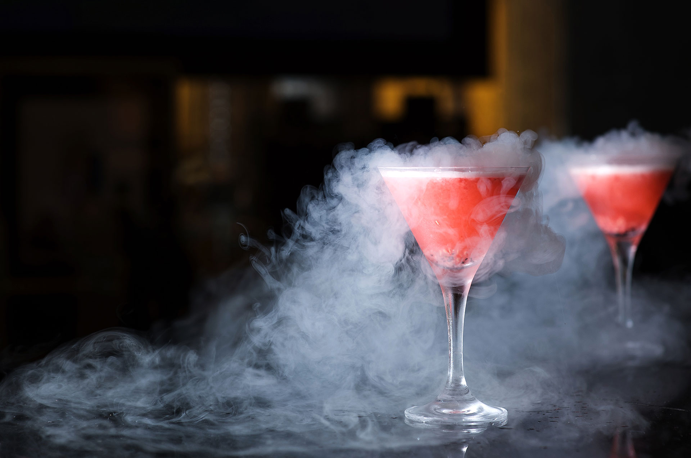

TPE réalisé par Paul, Denis et Alan en 623
I.Présentation de la cuisine moléculaire
1- Qu’est-ce que la cuisine moléculaire ?
D’où vient t’elle ?
La cuisine moléculaire prend son origine dans la gastronomie moléculaire, une discipline crée par deux cuisiniers / scientifiques à la fin des années 80. Explorons plus en détail cette nouvelle cuisine. La cuisine moléculaire est prisée de tous. Mais que signifie réellement cuisine moléculaire? A la base de cette cuisine très particulière, il y a la gastronomie moléculaire, cette gastronomie est née de la rencontre du physico-chimiste français Hervé This et du physicien anglais Nicholas Kurti, à la fin des années 80. Ils décrivent la gastronomie moléculaire comme l’observation scientifique des réactions culinaires, des processus physico-chimique de la cuisine. Les deux scientifiques cherchent alors à trouver scientifiquement comment rendre leurs plats meilleurs et comment fonctionnent la cuisine. A la mort de Kurti, Hervé This décide de continuer seul et va ainsi révolutionner la cuisine traditionnelle
Quel est le but de la gastronomie moléculaire ?
A la base l’idée est plutôt simple, chercher scientifiquement les meilleures utilisations pour les aliments afin de créer des recettes capable d’améliorer la qualité des plats issus de l’industrie alimentaire. Bien entendu les grands chefs ne sont pas restés en retrait et ont très vite ajouté cette science culinaire à leur art, ils ont ainsi donné naissance à la cuisine moléculaire. La cuisine moléculaire a permis à de nombreux chefs de se faire un nom comme Ferran Adria avec son restaurant El Bulli qui a été sacré meilleur restaurant au monde.
Quel sont les techniques qui permettent de différencier cuisine moléculaire et cuisine normale?
1. la sphérification :
Tout d’abord, il existe trois grandes sortes de sphérification :
A) La sphérification basique :
C’est une technique qui consiste à préparer deux solutions pour provoquer une réaction. La première solution est constituée d’un liquide de votre choix, il sera ensuite au cœur de la sphere et de l’alginate de sodium (environ 1% du volume de la solution). Le liquide doit avoir un pH basique (supérieur à 7) ou avec un faible taux de calcium sinon l’alginate ne peut pas se mélanger (il faut mixer le mélange pour que l’alginate s’incorpore bien). La deuxième solution est un bain de calcium. Pour réaliser ce mélange, il faut faire une dilution de chlorure de calcium (environ 2% du volume), cette dilution se fait dans de l’eau. Afin de former un gel autour des gouttes de la première solution, on utilise un bain de calcium qui fixe les chaînes d’alginate entre elles. Il faut penser à prévoir un récipient d’eau afin de rincer les billes car le chlorure de calcium leur donne un goût amer. Sphérification basique
B)La sphérification inversée :
C’est une technique qui utilise les mêmes bases que la sphérification basique mais en interchangeant la place des ingrédients. La première solution sera ici mélangée avec le chlorure de calcium, c’est la dilution qui contient l’alginate. L’avantage de cette technique de sphérification est que la solution reste très liquide contrairement à la sphérification basique. Cela permet aussi d’utiliser des produits riches en calcium (produits laitiers) tout en évitant d'ajouter trop de sel de calcium qui donne un goût amer et salé. Sphérification inversée
C)La sphérification inversée congelée :
La sphérification inversée congelée utilise un principe similaire aux deux précédents mais la méthode est différente. Il faut ajouter du calcium dans le mélange à sphérifier (comme dans la sphérification inversée) puis le mettre au congélateur dans un moule en forme de demi-sphère. Une fois la préparation gelée, il faut la tremper rapidement dans une solution d'alginate de sodium et attendre. Lorsque la solution gelée fond, elle forme une pellicule autour des demi-sphères et devient liquide au cœur. Comme la sphérification inversée, elle permet d'avoir un cœur très liquide et d'utiliser des produits riches en calcium (ex : le lait et autres produits à base de lactose). Pour le caviar de betterave, il faut utiliser la sphérification inversée pour obtenir des billes de betterave au cœur fondant : il faut introduire du calcium dans les sphères et les mettre dans un bain d’alginate. Les sphères seront alors solides avec un cœur très liquide. Sphérification inversée
D) Réactions chimiques de la sphérification :
La sphérification se produit car l’alginate de sodium est composé d’une longue chaîne de groupes carboxylates COO- et de cations Na+. En chimie organique, un groupe carboxyle est composé d’un atome de carbone lié par une double liaison à un premier atome d’oxygène et par une liaison simple à un second atome d’oxygène, lui-même relié à un atome d’hydrogène représenté par la formule développée suivante :
Les ions carboxylates sont les bases conjuguées des groupes carboxyles. Les ions Na+ ne sont que spectateurs dans la réaction mais permettent d’avoir une molécule de charges neutres. Lorsque l’alginate de sodium rencontre un sel de calcium, le chlorure de calcium dans notre cas, les ions calcium convergent vers les ions sodium et les remplacent. La double charge positive des ions Ca2+ entraîne une réaction avec les deux groupements COO- et relie les chaînes d’alginate entre elles, c’est ce qui provoque la formation du gel. Schéma simplifié de la molécule d’alginate de sodium